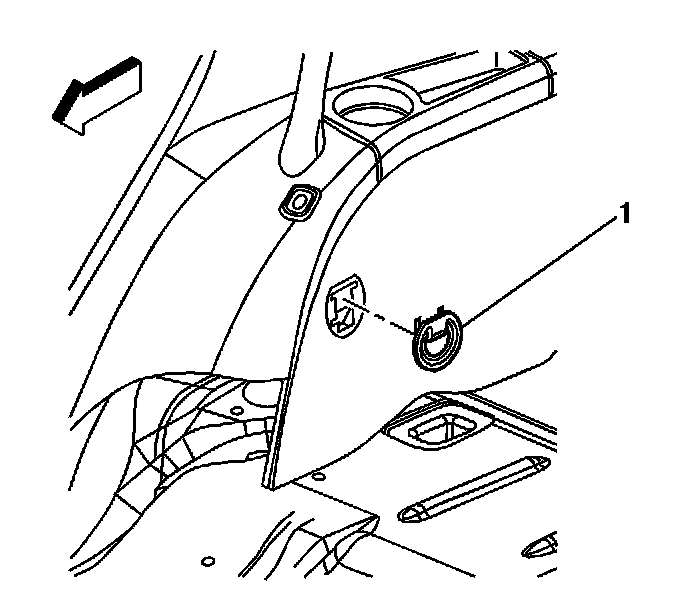
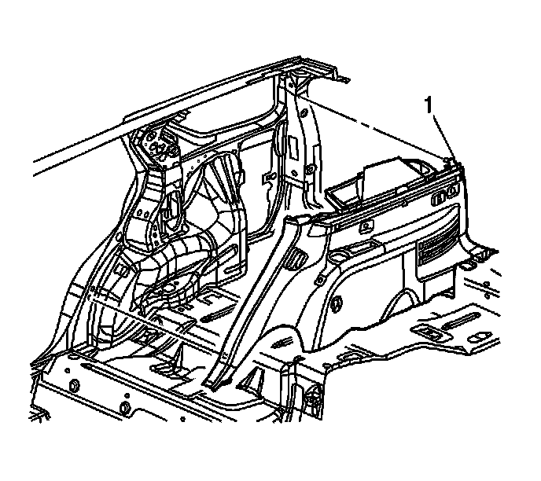

Body Side Rear Trim Panel Replacement (w/o TB5)
Body Side Rear Trim Panel Replacement (w/o TB5)
Removal Procedure
1. Lower the rear seats to assist in removal of the trim panel.

2. Remove the rear quarter trim tie down bezel (1).
3. Remove the side door garnish molding. Refer to Side Door Opening Frame Garnish Molding Replacement (Service and Repair) .
4. Remove the body side rear upper garnish molding. Refer to Body Side Rear Upper Garnish Molding Replacement (w/TB5) (Service and Repair)Body Side Rear Upper Garnish Molding Replacement (w/o TB5) (Service and Repair) .
5. Remove the rear compartment sill plate. Refer to Rear Compartment Sill Trim Plate Replacement (Service and Repair) .

6. Pull the trim panel (1) away from the body.
7. Disconnect the electrical connectors from the trim panel.
8. Remove the trim panel from the vehicle.
Installation Procedure
1. Position the trim panel (1) to the vehicle.
2. Position the seat belt over the top of the trim panel, ensuring that the buckle is not behind the trim panel.
3. Connect the electrical connectors.
4. Index the locating tabs on the trim panel to the holes in the body.
5. Seat the clips the retain the trim panel to the body.
6. Install the rear compartment sill plate. Refer to Rear Compartment Sill Trim Plate Replacement (Service and Repair) .
7. Install the body side rear upper garnish molding. Refer to Body Side Rear Upper Garnish Molding Replacement (w/TB5) (Service and Repair)Body Side Rear Upper Garnish Molding Replacement (w/o TB5) (Service and Repair) .
8. Install the side door garnish molding. Refer to Side Door Opening Frame Garnish Molding Replacement (Service and Repair) .
9. Install the rear quarter trim tie down bezel (1).
10. Put the rear seats in the upright position.